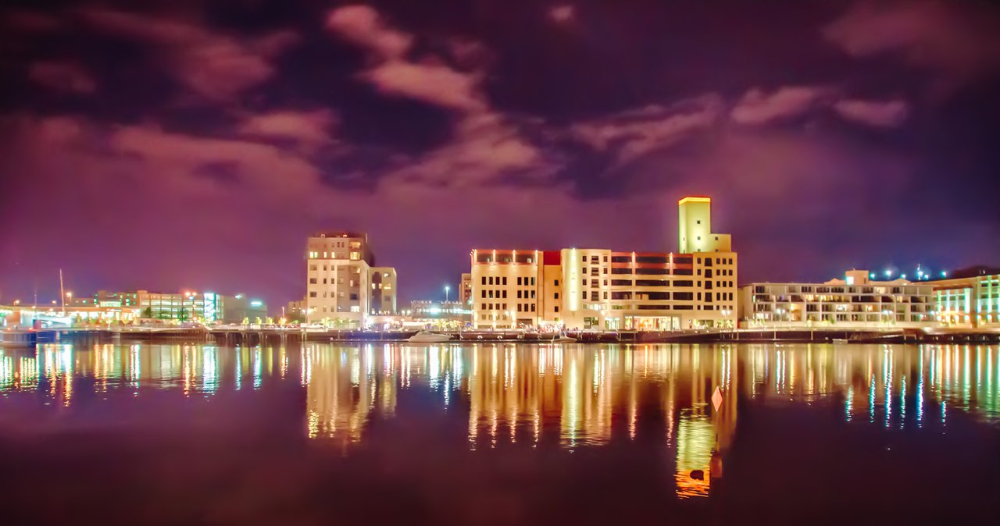
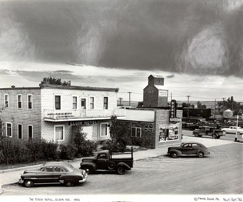
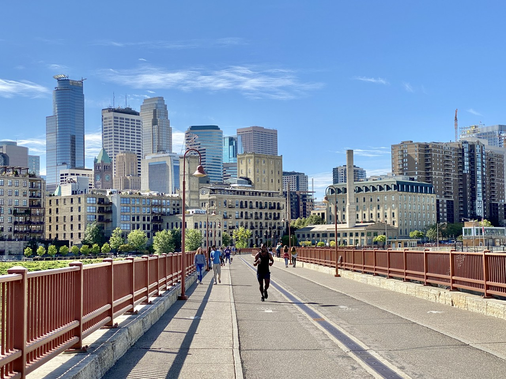
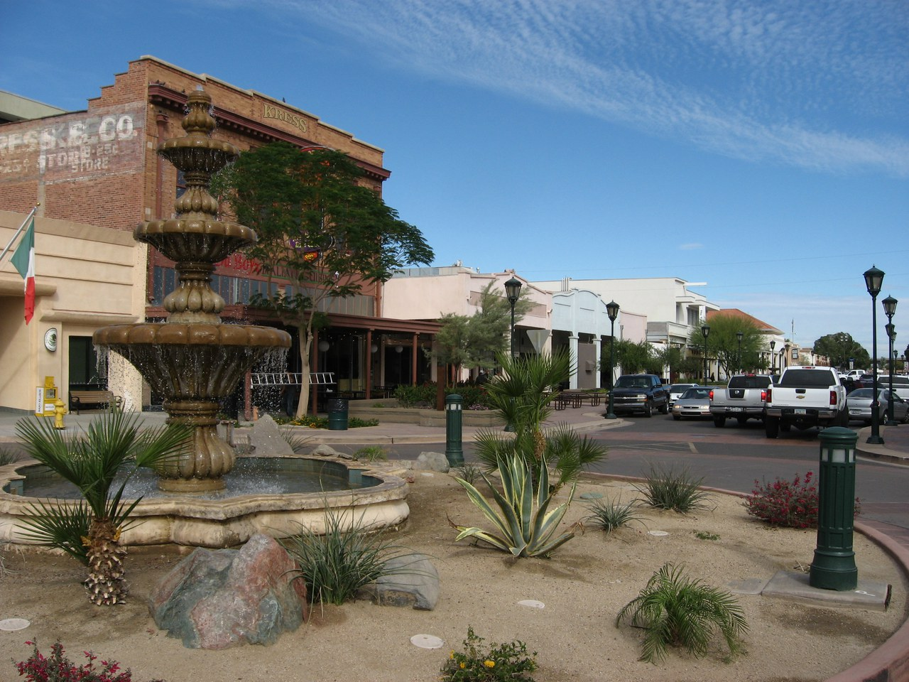
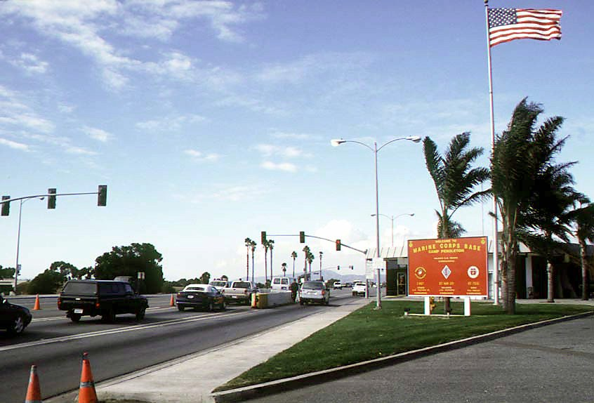
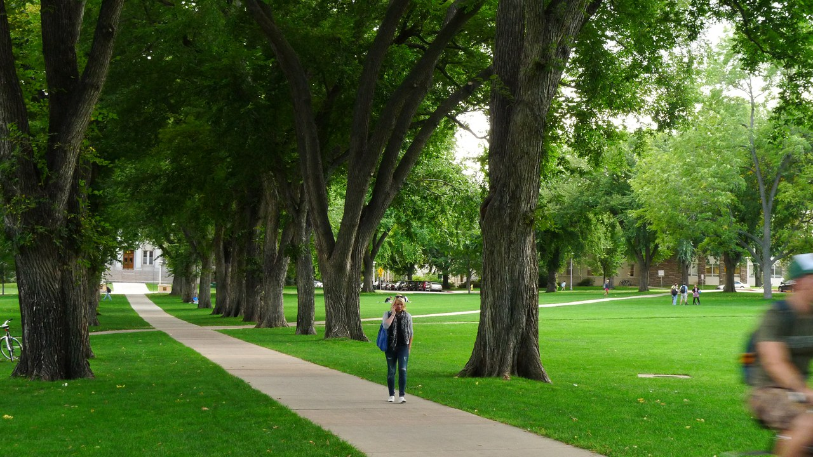
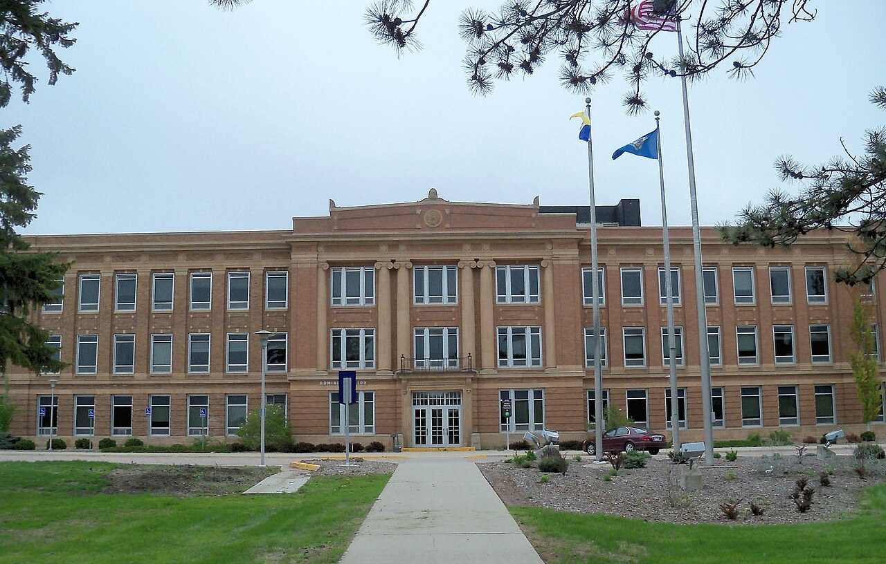
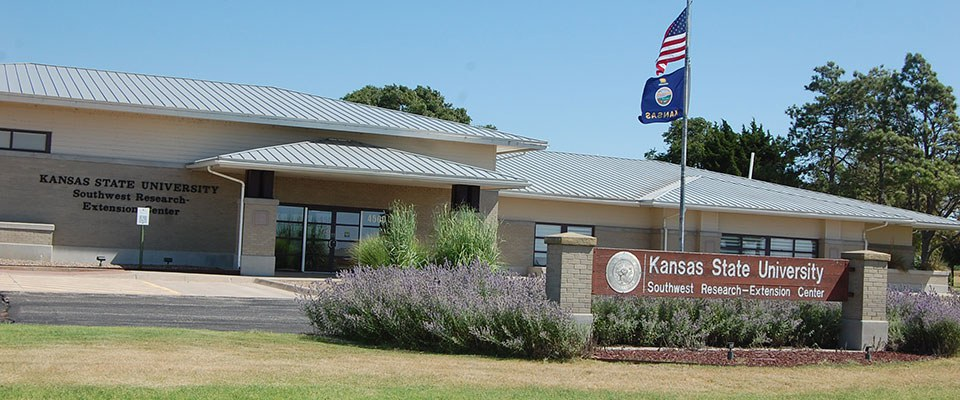
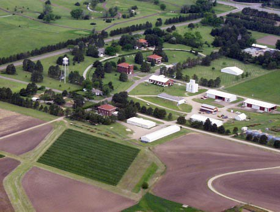

← Back to Bill’s story and map
Street scenes, campuses, a military base, and the research stations where his work took root. Photograph dates appear below; Bill’s connection to each place is documented separately in the article.
Local copies and credits are preserved with the downloadable source collection. Each photograph retains its own copyright or license.
Photograph: 2012-09-08

A modern view across the Fox River toward downtown Green Bay.
Chris Rand · CC BY-SA 3.0
Source and attribution · CC BY-SA 3.0 · Download photograph
The web-sized copy retains the source license; resized without cropping. Web copy resized without cropping.
Photograph: 1952

Elgin’s street scene in 1952, twelve years after the census found Bill’s family there.
Frank Agar Jr. · Noncommercial educational use. Image courtesy of the University of North Dakota.
Source and attribution · Noncommercial educational use · Download photograph
Photographed in 1952; print developed in 1982. Image courtesy of the University of North Dakota. The repository permits public noncommercial educational reproduction with this credit; artist copyright may apply. Web copy resized without cropping.
Photograph: 2021-09-25

The Mill District and downtown skyline, seen from the Stone Arch Bridge.
w_lemay · CC BY-SA 2.0
Source and attribution · CC BY-SA 2.0 · Download photograph
The web-sized copy retains the source license; resized without cropping. Web copy resized without cropping.
Photograph: 2010-02-27

Historic downtown Yuma, photographed decades after Bill and Jean’s wedding.
Ken Lund · CC BY-SA 2.0
Source and attribution · CC BY-SA 2.0 · Download photograph
The web-sized copy retains the source license; resized without cropping. Web copy resized without cropping.
Photograph: 1997-11-12

The main entrance to Camp Pendleton, photographed in 1997.
SSGT RICHARD P. TUDOR, USMC · Public domain
Source and attribution · Public domain · Download photograph
The web-sized copy retains the source license; resized without cropping. Web copy resized without cropping.
Photograph: 2011-09-26

A tree-lined walk through the Oval on Colorado State’s Fort Collins campus.
Spilly816 · CC BY-SA 3.0
Source and attribution · CC BY-SA 3.0 · Download photograph
The web-sized copy retains the source license; resized without cropping. Web copy resized without cropping.
Photograph: 2013-05-25

The Administration Building on South Dakota State’s Brookings campus.
AlexiusHoratius · CC BY-SA 3.0
Source and attribution · CC BY-SA 3.0 · Download photograph
The web-sized copy retains the source license; resized without cropping. Web copy resized without cropping.
Photograph: Photo date unreported; published 2025-08-14

The research center at Garden City in a photograph published by K-State in 2025.
K-State Research and Extension · © Kansas State University
Source and attribution · © Kansas State University · Download photograph
Contextual illustration in this noncommercial research biography. Copyright remains with Kansas State University; this collection grants no broader reuse rights. Web copy resized without cropping.
Photograph: 2000

An aerial view of the Hays research station in 2000, two years after Bill retired.
Kansas State University · © Kansas State University
Source and attribution · © Kansas State University · Download photograph
Cover photograph reproduced from William M. Phillips, A History of the Agricultural Research Center–Hays: The First 100 Years, Kansas State University, Bulletin 663 (2001). Contextual illustration; copyright remains with the source publisher. No broader reuse rights are granted. Web copy resized without cropping.


.jpg){kind=link}